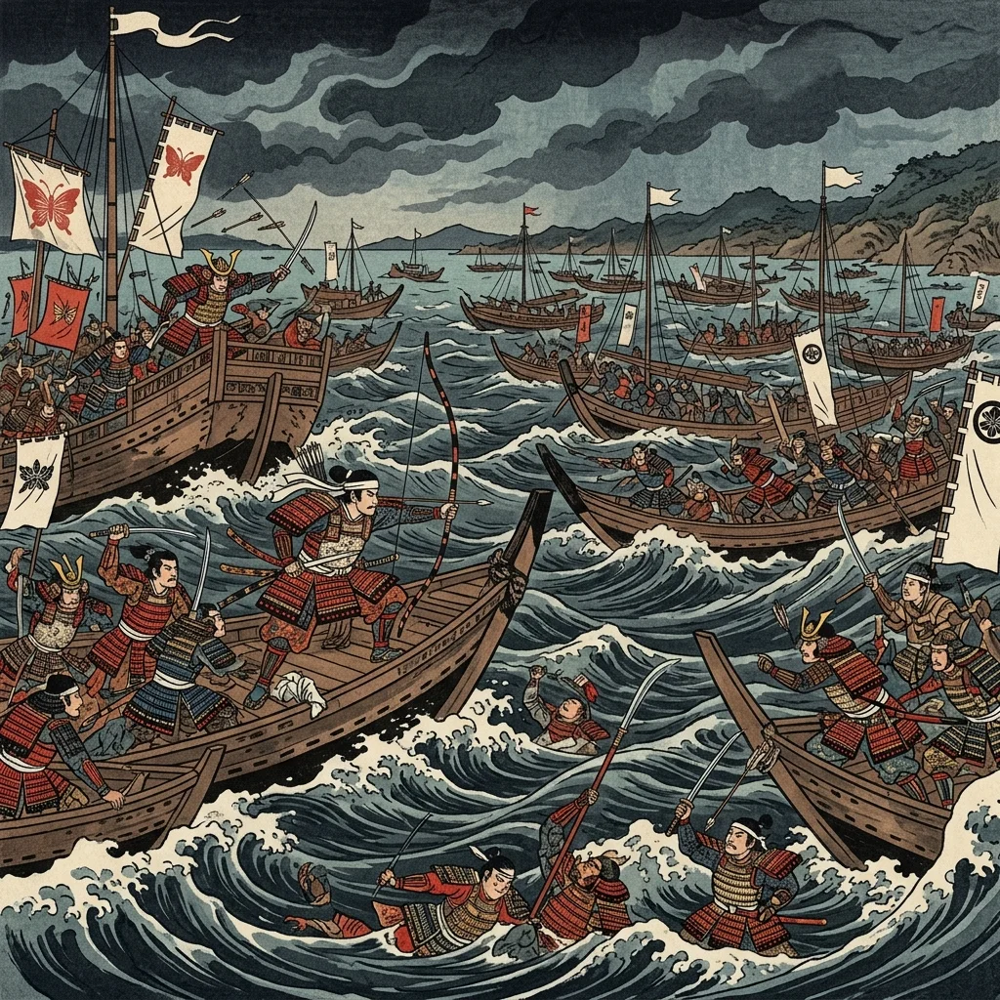
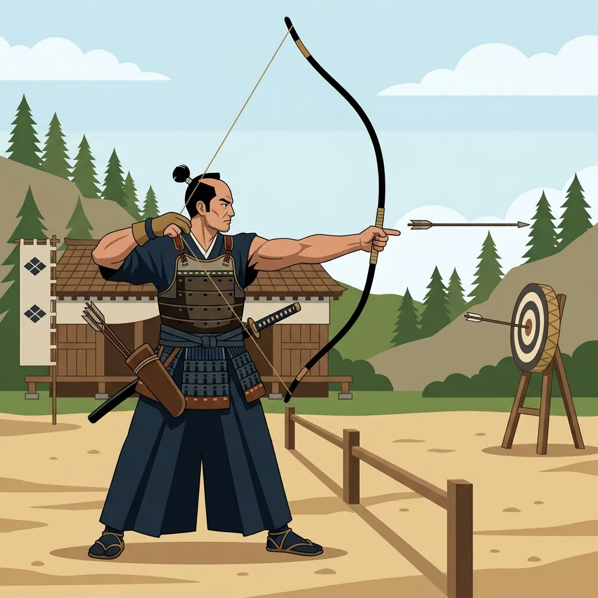
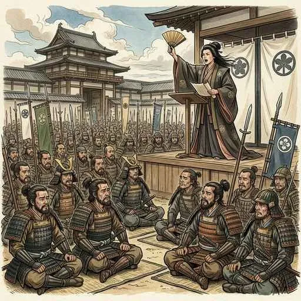

10. 武士の台頭と鎌倉幕府�E成竁E/h1>
古代の平安時代末期、貴族に代わって武力を持つ「武士」が急速に力をつけました。今回は、源頼朝がどのようにして日本初�E本格皁E��武家政権である「鎌倉幕府」を打ち立て、武士中忁E�E社会を築いてぁE��た�Eか、その仕絁E��と歴史の流れを詳しく解説します！E/p>
1. 源平の戦ぁE��鎌倉幕府�E成竁E/h2>
平氏�E棟梁である平渁E��が亡くなった後、�E国吁E��で平氏�E支配に反発する源氏が挙�Eしました。その中忁E��なった�Eが、伊豁E��流されてぁE��源頼朝（みなもとのよりとも！E/span>です、E/p>
頼朝�E弟�E源義経（みなもとのよしつね�E�E/span>らを派遣して平氏を追ぁE��め、E185年の壁E��浦の戦ぁE��だん�EぁE��のたたかい�E�E/span>�E�現在の山口県）でつぁE��平氏を滁E��しました、E/p>
 図1�E�源氏と平氏�E最後�E決戦となった「壁E��浦の戦ぁE���Eイメージ 平氏を滁E��した後、E��朝�E対立した義経を捕らえることを名目に、E185年、国ごとに守護�E�しめE���E�E/span>、荘園や公領（�Eの土地�E�ごとに地頭�E�じとぁE��E/span>を設置する権利を朝廷に認めさせました。この1185年こそが、実質皁E��武士が�E国の支配権を握った「鎌倉幕府�E成立」�E年とされてぁE��す、E/p>
1192年、源頼朝�E朝廷から征夷大封E��（せぁE��たいしょぁE��ん！E/span>に任命され、名実ともに鎌倉幕府�Eトップとなりました。幕府が開かれた鎌倉（神奈川県�E��E、三方が山に囲まれ、一方が海に面した、敵から攻め込まれにくい自然の要塞でした、E/p>
 図2�E�三方の山と南�E海に守られた要害の地「鎌倉」�E地勢イメージ 鎌倉幕府�E、封E��と部下�E武士である御家人�E�ごけにん！E/span>が、土地を媒介とした強ぁE��主従関係」で結�EれてぁE��した。これを封建制度�E�ほぁE��んせぁE���E�E/span>と呼びます、E/p>
御恩�E�ごおん�E�[封E��から御家人へ] 封E��が御家人に対し、�E祖代、E�E領地の支配を認めること�E�本領安堵�E�や、手柁E��応じて新たな領地を与えること�E�新恩給与）、E/p>
奉�E�E�ほぁE��ぁE��[御家人から封E��へ] 御家人が封E���Eために、いざとぁE��時に命がけで軍役�E�戦ぁE��と�E�を果たしたり、京都めE��倉�E警備（京都大番役など�E�を行ったりすること。「いざ鎌倉」とぁE��言葉�Eここから来てぁE��す、E/p>
源頼朝�E死後、封E���E力が衰えると、E��朝�E妻である北条政子（ほぁE��めE��まさこ�E�E/span>の実家である**北条氁E*が台頭します。北条氏�E封E��を補佐する最高�Eである執権�E�しっけん�E�E/span>の地位を独占し、幕府�E実権を握りました。これを執権政治�E�しっけんせいじ！E/span>と呼びます、E/p>
幕府�E封E��交代の混乱を見て、朝廷の権力を取り戻そうと老E��ぁEspan class="marker-orange">後鳥羽上皇�E�ごとばじょぁE��ぁE��E/span>は、E221年に北条義時（第2代執権�E��E追討を求めて兵を挙げました。これが承乁E�E乱�E�じめE��きゅぁE�Eらん�E�E/span>です、E/p>
動揺する東国の御家人たちに対し、E��朝�E妻・北条政子が「頼朝�Eの御恩は山よりも高く海よりも深ぁE��と涙ながらに呼びかける大演説を行い、御家人たちは団結。幕府軍�E朝廷軍を圧倒しました、E/p>
 図3�E�御家人たちの忁E��一つにし、幕府�E危機を救った「北条政子�E演説」�Eイメージ 承乁E�E乱の勝利により、幕府�E権力�E朝廷をしのぐよぁE��なり、支配地域�E西日本へも大きく庁E��りました。幕府�E、乱の直後に朝廷を監視し、京都の警備を行うための機関として六波羁E��題（ろく�EらたんだぁE��E/span>を設置しました、E/p>
西日本へ支配が庁E��ったことで、武士どぁE��の土地争いめE��武士と公家・農民とのトラブルが急増しました。そこで第3代執権の北条泰時（ほぁE��めE��めE��とき！E/span>は、E232年に日本初�E武家独自の法律である御成敗式目�E�ごせいばぁE��きもく／貞永式目�E�E/span>を制定しました、E/p>
これは全51条からなり、�E家の法律ではなく、武士の社会で行われてぁE��「道琁E��や「�E習（これまでのならわし）」をもとに、裁判を�E平に行うための基準を示したも�Eです。この法律�E、その後�E室町幕府や戦国大名�E法律にも大きな影響を与え続けました、E/p>
🔥 こ�E単�EのチE��ト対策�E暗記�EコチE/p>
定期チE��トで点数を稼ぐため�E最重要�Eイントを整琁E��ましょぁE��E/p>
① 守護・地頭の設置�E�E185年�E�E/h3>
② 征夷大封E��への就任�E�E192年�E�E/h3>
2. 封E��と御家人の結�Eつき（封建制度�E�E/h2>
3. 執権政治と承乁E�E乱
① 承乁E�E乱�E�E221年�E�E/h3>
② 乱の後�E影響と支配�E拡大
4. 御成敗式目の制定！E232年�E�E/h2>